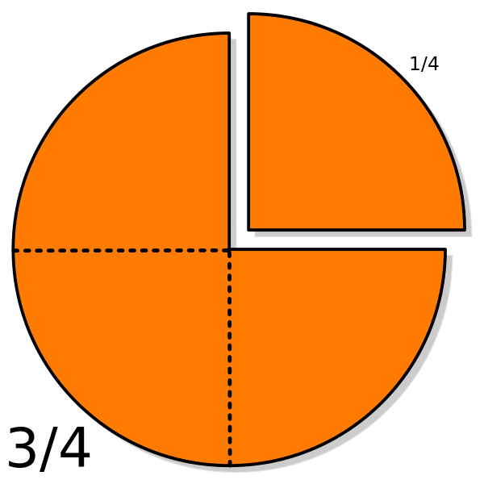

Дріб в математиці - число, що складається з однієї або декількох рівних частин (часток) одиниці. За способом запису дробу діляться на два формати: звичайні виду і десяткові виду 0.12345
Види дробів:
- Звичайні дроби
- Правильні і неправильні дроби
- Мішані дроби